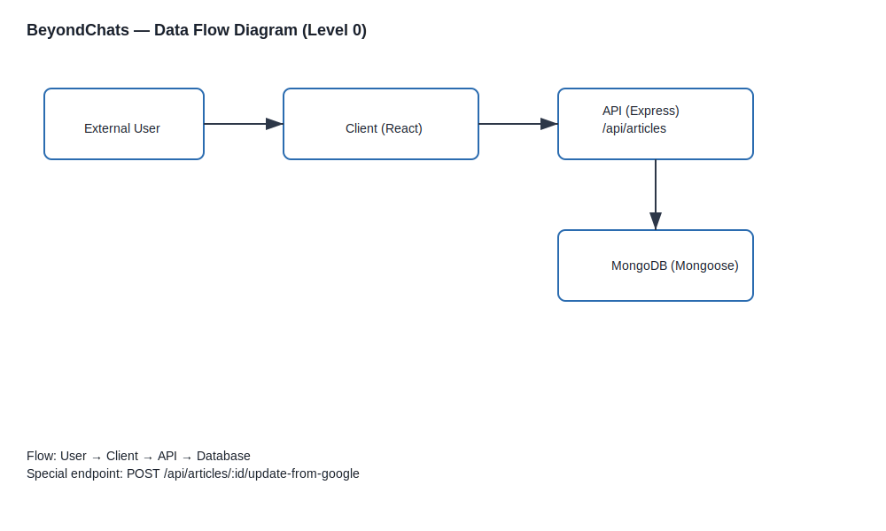
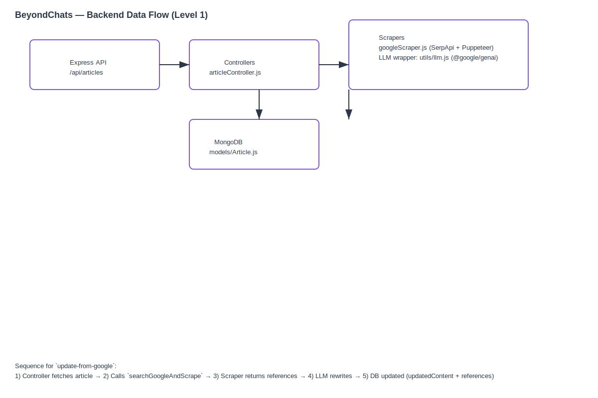

BeyondChats — Submission Package
What this file contains: project summary, setup highlights, data flow diagrams, architecture notes, and screenshots — ready to print to PDF.
Project Summary
BeyondChats ingests articles, searches for external references via Google (SerpApi), scrapes reference pages (Puppeteer), and uses an LLM (Google Gemini) to rewrite and enhance article content. The backend is a Node/Express API and the frontend is a React + Vite app.
- Client: React + Vite
- Server: Node.js, Express, Mongoose
- Scraping: SerpApi + Puppeteer
- LLM: Google Gemini (@google/genai) wrapper (optional)
Quick Setup (high-level)
See `README.md` for detailed steps. Essential env vars (server/.env):
MONGO_URI=your_mongo_uri
PORT=5000
SERP_API=your_serpapi_key
GEMINI_API_KEY=your_gemini_key (optional)
GEMINI_MODEL=gemini-2.5-flash
Data Flow Diagrams
System Context (Level 0)

Backend Data Flow

Frontend Data Flow

Architecture Notes
Key components and interactions:
- Client calls Express API endpoints under
/api/articles.
- The controller (articleController.js) handles CRUD and the `update-from-google` flow.
- `update-from-google` flow: fetch article → search + scrape → rewrite via LLM → update DB (save updatedContent + references).
- MongoDB stores `originalContent`, `updatedContent`, and `references` for each article.
Screenshots
Original Article View

Updated (LLM-enhanced) Article View

Submission Checklist
- Repository: client/ and server/ present ✓
- `README.md` with setup, env and links ✓
- Diagrams located in `diagrams/` ✓
- Screenshots present in repo root ✓
- Printable submission page: this file ✓
To create a PDF: open this file in your browser and print to PDF (Ctrl/Cmd+P → Save as PDF).